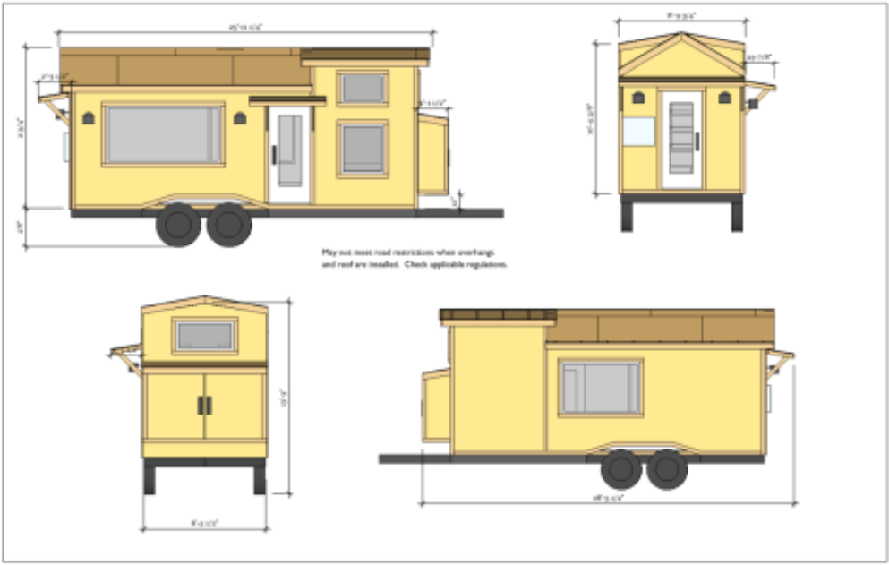

Plans à l'échelle
Travail individuel. Chaque élève dessine sa propre série de plans, dans les règles du dessin technique.
Passer de l'esquisse au plan technique

Vous avez choisi en équipe le style et l'aménagement de votre Tiny House. Avant de passer en 3D, il faut la dessiner de façon rigoureuse en format plan, en respectant les normes de dessin.
Il va falloir dessiner assez de plans pour qu'on comprenne toutes les formes et tous les agencements. Chaque élève va donc devoir dessiner des plans…
On fixera l'épaisseur des murs et du sol à 14 cm, et l'épaisseur du plafond à 18 cm.
Votre dossier avec la partie « Plans » complétée.
Les plans à dessiner
Vous devez dessiner divers plans sur feuilles A3. En voici la liste :
- Première feuille A3 — une coupe de la Tiny House, pour voir les dimensions et l'agencement intérieur.
- Seconde feuille A3 — les quatre faces de la Tiny House, avec les ouvrants.
- Troisième feuille A3 — si vous avez le temps, une perspective de la Tiny… libre.
Vous devez respecter les normes de dessin : cartouche, échelle, murs, cloisons, portes, etc. Une fois les plans terminés, insérez-les dans votre dossier.